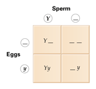
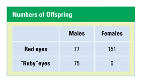
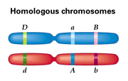

Reviewing Concepts
Multiple Choice
Choose the letter of the best answer.
1. Which of the following states that heritable factors (genes) retain their identity generation after generation?
a. blending hypothesis of inheritance
b. principle of independent assortment
c. principle of segregation
d. particulate hypothesis of inheritance
2. Which term describes an individual with two identical alleles for aparticular character?
a. homozygous
b. heterozygous
c. dominant
d. recessive
3. If you want to know the genotype of a pea plant that has purple flowers, which would you perform?
a. dihybrid cross
b. genetic linkage
c. Punnett square
d. testcross
4. What is the predicted phenotypic ratio of the F2 generation of a dihybrid cross?
a. 1 : 3 : 1
b. 3 : 9 : 1 : 1
c. 1 : 9 : 9 : 1
d. 9 : 3 : 3 : 1
5. AB blood type in humans is a result of
a. intermediate inheritance.
b. codominance.
c. sex-linked inheritance.
d. environmental effects.
6. The farther apart the alleles for two genes are on the same chromosome, the more likely they are to
a. separate during meiosis.
b. stay together during meiosis.
c. be inherited only by male offspring.
d. both be recessive.
7. How many alleles for a sex-linked (X-linked) gene does a male carry?
a. four
b. one
c. none
d. two
Short Answer
8. Describe the blending hypothesis. Explain why it was discarded as a valid hypothesis.
9. Suppose you have two fully grown pea plants, one tall and one dwarf. Dwarf height is a recessive trait. Using T and t as the alleles, what is the the dwarf plant's genotype? How could you learn the tall plant's genotype?
10. List the possible combinations of alleles in the gametes of an individual with genotype AaBb.
11. Explain Mendel's principle of independent assortment. When might this principle not apply?
12. If a father's blood type is B and a mother's blood type is A, is it possible that their child could have blood type O? Explain your response.
13. Define polygenic inheritance and give an example of a character that is polygenic.
14. Explain how a white-eyed male fruit fly can have a red-eyed father.
Visualizing Concepts
15. The Punnett square below represents the self-fertilization of a pea plant that is heterozygous for yellow peas. Copy the diagram and fill in the missing alleles to predict the resulting offspring.
a. What fraction of the offspring are predicted to have yellow peas? Green peas?
b. What is the predicted phenotypic ratio of the offspring? The predicted genotypic ratio?

16. Draw a Punnett square to show how the 1 : 2 : 1 ratio of black : blue : white chickens is predicted for the F2 offspring shown in Figure 10-9.
Applying Concepts
Analyzing Information
17. Analyzing Data The table below shows the results of a cross of two red-eyed fruit flies. Some of the offspring have "ruby"-colored (deep pink) eyes instead of the usual red-colored eyes.
a. Are ruby-colored eyes dominant or recessive?
b. How do the results of the cross indicate that ruby eye color is sex-linked?
c. Using XR for the dominant allele and Xr for the recessive allele, write the genotypes of the two parents.
d. Do the female offspring all have the same genotype? List the likely genotype(s) of the female offspring.
e. List the genotype of the red-eyed males and the genotype of the ruby-eyed males.

18. Analyzing Diagrams The diagram shows three gene loci on a pair of homologous chromosomes.
a. Of the three genes found on this pair of homologous chromosomes, which two are most likely to be separated from each other by a crossover event? Explain.
b. If no crossovers occurred between any of the genes, list the possible combinations of alleles in this individual's gametes.

Critical Thinking
19. Evaluating Models Explain how the table of outcomes for the pennies presented in Concept 10.2 helps explain the outcome of a cross of two F1 offspring. What do the two sides represent?
20. Problem Solving Tim and Christine have freckles (a dominant trait that is not sex-linked), but their son Michael does not. Show with a Punnett square how this is possible. Tim and Christine are expecting a baby. What is the probability of freckles in that child?
21. Analyzing Scientific Explanations Suppose a friend in biology class says: "There are just two alleles for every gene." Another of your friends says: "There are many alleles for some genes." In what way are they both correct? Explain.
22. What's Wrong With These Statements?
Briefly explain why each statement is inaccurate or misleading.
a. If the first time you flip a penny you see a tail, the next flip is more likely to show a head.
b. If you buy two plants of the same species that have different-colored flowers, they must have different genotypes.
Performance Assessment
Design an Experiment When a horse breeder mates two true-breeding horses, one of which is dark brown and the other white, she produces a horse called a palomino that is creamy gold in color. Formulate a hypothesis to explain what kind of inheritance pattern this is. Design an experiment the horse breeder could perform to test this hypothesis.